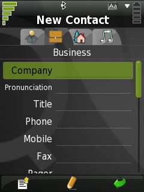

|
Home · All Namespaces · All Classes · Grouped Classes · Modules · Functions | |
[Previous: Chapter 1] [Contents] [Next: Chapter 3]
System tests generally consist of a series of actions and verification that the expected behaviour took place. When testing a Qt Extended application, this usually takes the form of simulating the input of specific text and verifying that the application subsequently displays the correct text. Testing necessarily includes navigating through forms and menus, activating buttons and comboboxes, and similar tasks. QtUiTest makes this very easy by supplying simple yet powerful navigation and input/output methods.
Using QtUitest, it is possible to simulate individual keyclicks, perhaps the most simple form of user interaction that can be simulated.
mytestcase = {
mytestfunction: function() {
keyClick(Qt.Key_A);
keyClick(Qt.Key_B);
keyClick(Qt.Key_C);
}
}
In the above example, the calls to keyClick() simulate a few individual key clicks, exactly as if the user had physically pressed keys on the device.
However, there are several disadvantages to this approach. Firstly, it is extremely verbose. Secondly, it means that the test will only work on a keypad device. To avoid these problems, the enter() function is provided:
mytestcase = {
mytestfunction: function() {
enter("abc");
}
}
On a keypad device, the above example has the same affect as the previous example, but is more concise. However, this test now has the additional advantage that it can work on a touchscreen device, as enter() knows how to simulate the necessary touchscreen events to input the given text.
In both of the examples above, input would be delivered to whichever widget is currently focused. In practice, what we often wish to do is enter text into a series of widgets displayed to the user.
For example, consider the following screen for entering the details of a new contact.

It would be possible to enter text in each field on this screen by using enter() and keyClick(Qt.Key_Down). However, the test would easily break if the order of fields were changed, or if fields were added or removed, and the test would not work on a touchscreen device.
To solve this problem, enter() (and many other functions in QtUiTest) take an optional Query Path parameter, which specifies which widget to operate on. The most common usage of query paths takes the form "LabelText", which refers to any widget which can receive input and is named or labeled "LabelText".
Entering text into a few fields on the screen featured above is achieved by the following example:
mytestfunction: function() {
enter("Yoyo Corporation", "Company");
enter("Yoyo Engineer", "Title");
enter("x51 YOYO", "Phone");
}
In the above example, if any of the specified fields are moved, the test will continue to work as expected. If any of the specified fields are removed, renamed, or no longer visible, the test will fail with a message indicating it cannot find the specified field.
Often, a user will be presented with a list of items or a context menu. QtUiTest provides a simple way to navigate to and select items in any list- or menu-like widget. The select() function will select an item from a list, combo box, menu or tab widget by looking at the display text for each item. It can also be used to activate a button with the given text.
mytestfunction: function() {
// Select "Show contacts" from the options (context) menu.
select("Show contacts", optionsMenu());
// Select "Bob" in the currently shown list.
select("Bob");
// Activate the "Edit" button to edit Bob's details.
select("Edit");
// Fill in the "Gender" field (a combo box) for Bob.
select("Male", "Gender");
}
select() allows a test to be reused by keypad and touchscreen devices. For instance, consider select("Edit") from the above example. On a touchscreen device, this will simply result in a click being simulated at the co-ordinates of the Edit button. On a keypad device, keyclicks will be simulated to navigate to and activate the Edit button.
Built-in Qt and Qt Extended widgets can be queried for their currently displayed text. The getText() function is the most common way of doing this.
mytestfunction: function() {
enter("Yoyo Corporation", "Company");
compare( getText("Company"), "Yoyo Corporation" );
}
The above example simply enters "Yoyo Corporation" into the "Company" field, then verifies that the field actually contains the text "Yoyo Corporation". Note that it is not necessary to explicitly call compare immediately after the enter command: it would have failed if the enter text had failed.
The next chapter explains how to make use of data driven testing.
[Previous: Chapter 1] [Contents] [Next: Chapter 3]
| Copyright © 2009 Trolltech | Trademarks | Qt Extended 4.4.3 |